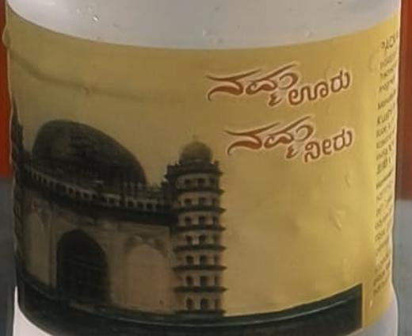
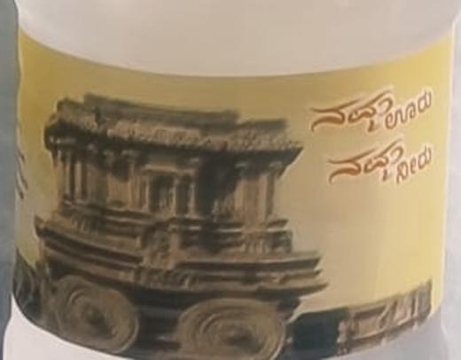

Who we areನಾವು ಯಾರು
We believe water should do more than quench thirst—it should connect you to your roots.ನೀರು ಬಾಯಾರಿಕೆ ನೀಗಿಸುವುದರ ಜೊತೆಗೆ ನಿಮ್ಮನ್ನು ನಿಮ್ಮ ಬೇರುಗಳೊಂದಿಗೆ ಬೆಸೆಯಬೇಕು ಎಂದು ನಾವು ನಂಬುತ್ತೇವೆ.
“Namma Ooru – Namma Neeru” is born from the idea of celebrating Karnataka’s identity through something as essential as water. Each bottle represents our land, our language, and our legacy.“ನಮ್ಮ ಊರು – ನಮ್ಮ ನೀರು” ಹುಟ್ಟಿದ್ದು ನೀರಿನಷ್ಟೇ ಅಗತ್ಯವಾದ ವಸ್ತುವಿನ ಮೂಲಕ ಕರ್ನಾಟಕದ ಗುರುತನ್ನು ಸಂಭ್ರಮಿಸುವ ಆಲೋಚನೆಯಿಂದ. ಪ್ರತಿ ಬಾಟಲಿಯೂ ನಮ್ಮ ನೆಲ, ನಮ್ಮ ಭಾಷೆ ಮತ್ತು ನಮ್ಮ ಪರಂಪರೆಯನ್ನು ಪ್ರತಿನಿಧಿಸುತ್ತದೆ.
Our brand name proudly reflects Kannada identity and regional pride. It stands for originality, emotional connection, and cultural respect.ನಮ್ಮ ಬ್ರ್ಯಾಂಡ್ ಹೆಸರು ಕನ್ನಡದ ಗುರುತು ಮತ್ತು ಪ್ರಾದೇಶಿಕ ಹೆಮ್ಮೆಯನ್ನು ಬಿಂಬಿಸುತ್ತದೆ. ಇದು ಮೌಲಿಕತೆ, ಭಾವನಾತ್ಮಕ ಬಾಂಧವ್ಯ ಮತ್ತು ಸಾಂಸ್ಕೃತಿಕ ಗೌರವದ ಸಂಕೇತ.
This is water that speaks Kannada.
This is water that carries pride.ಇದು ಕನ್ನಡ ಮಾತನಾಡುವ ನೀರು.
ಇದು ಹೆಮ್ಮೆಯನ್ನು ಹೊತ್ತ ನೀರು.
Every land has a story.
Every drop has a soul.ಪ್ರತಿ ನೆಲಕ್ಕೂ ಒಂದು ಕಥೆಯಿದೆ.
ಪ್ರತಿ ಹನಿಗೂ ಒಂದು ಆತ್ಮವಿದೆ.
We choose a famous place or monument from each region, print its photograph on the bottle, and tell its story beside it. When placed on a table, it instantly elevates the space.ಪ್ರತಿ ಪ್ರದೇಶದ ಪ್ರಸಿದ್ಧ ಸ್ಥಳ ಅಥವಾ ಸ್ಮಾರಕವನ್ನು ಆರಿಸಿ, ಅದರ ಚಿತ್ರ ಮತ್ತು ಕಥೆಯನ್ನು ಬಾಟಲಿಯ ಮೇಲೆ ಮುದ್ರಿಸುತ್ತೇವೆ. ಮೇಜಿನ ಮೇಲಿಟ್ಟರೆ ಅದು ಆ ಸ್ಥಳದ ಅಂದವನ್ನೇ ಹೆಚ್ಚಿಸುತ್ತದೆ.

The great dome of the Adil Shahi sultanate, one of the largest in the world, on our 1 litre bottle.ಆದಿಲ್ಶಾಹಿ ಸುಲ್ತಾನರ ಭವ್ಯ ಗುಮ್ಮಟ, ವಿಶ್ವದ ಅತಿದೊಡ್ಡ ಗುಮ್ಮಟಗಳಲ್ಲಿ ಒಂದು; ನಮ್ಮ 1 ಲೀಟರ್ ಬಾಟಲಿಯಲ್ಲಿ.

The carved chariot of the Vitthala Temple, an icon of Vijayanagara craft, on our 500 ml bottle.ವಿಜಯನಗರ ಕಲೆಯ ಹೆಗ್ಗುರುತಾದ ವಿಠ್ಠಲ ದೇವಾಲಯದ ಕೆತ್ತನೆಯ ರಥ; ನಮ್ಮ 500 ಮಿ.ಲೀ ಬಾಟಲಿಯಲ್ಲಿ.
New districts and landmarks join the collection as our distribution grows across the state.ನಮ್ಮ ವಿತರಣೆ ರಾಜ್ಯದಾದ್ಯಂತ ಬೆಳೆದಂತೆ ಹೊಸ ಜಿಲ್ಲೆಗಳು ಮತ್ತು ಸ್ಮಾರಕಗಳು ಸೇರಲಿವೆ.
From a single bottle to a family can, and soon ice and premium waters.ಒಂದು ಬಾಟಲಿಯಿಂದ ಕುಟುಂಬದ ಕ್ಯಾನ್ವರೆಗೆ, ಶೀಘ್ರದಲ್ಲೇ ಐಸ್ ಮತ್ತು ಪ್ರೀಮಿಯಂ ನೀರು.
While our roots are traditional, our process is modern.ನಮ್ಮ ಬೇರುಗಳು ಸಾಂಪ್ರದಾಯಿಕ, ಆದರೆ ನಮ್ಮ ಪ್ರಕ್ರಿಯೆ ಆಧುನಿಕ.
Our visionನಮ್ಮ ದೂರದೃಷ್ಟಿ
We envision Namma Ooru – Namma Neeru becoming a globally recognized premium water brand that represents Karnataka’s identity, values, and quality standards.ಕರ್ನಾಟಕದ ಗುರುತು, ಮೌಲ್ಯ ಮತ್ತು ಗುಣಮಟ್ಟವನ್ನು ಪ್ರತಿನಿಧಿಸುವ, ಜಾಗತಿಕವಾಗಿ ಗುರುತಿಸಲ್ಪಡುವ ಪ್ರೀಮಿಯಂ ನೀರಿನ ಬ್ರ್ಯಾಂಡ್ ಆಗುವ ಕನಸು ನಮ್ಮದು.
Purely-Kannada water, delivered into the hands of Kannadigas.ಶುದ್ಧ ಕನ್ನಡ ನೀರು, ಕನ್ನಡಿಗರ ಕೈಗೆ.
Our missionನಮ್ಮ ಧ್ಯೇಯ
Our labels and bottles.ನಮ್ಮ ಲೇಬಲ್ಗಳು ಮತ್ತು ಬಾಟಲಿಗಳು.
If you believe in quality, culture, and pride, Namma Ooru – Namma Neeru is the brand for you. Your brand can also feature on our bottle labels and travel with the water.ಗುಣಮಟ್ಟ, ಸಂಸ್ಕೃತಿ ಮತ್ತು ಹೆಮ್ಮೆಯಲ್ಲಿ ನಿಮಗೆ ನಂಬಿಕೆಯಿದ್ದರೆ, ನಮ್ಮ ಊರು – ನಮ್ಮ ನೀರು ನಿಮ್ಮದೇ ಬ್ರ್ಯಾಂಡ್. ನಿಮ್ಮ ಬ್ರ್ಯಾಂಡ್ ಕೂಡ ನಮ್ಮ ಬಾಟಲಿ ಲೇಬಲ್ನಲ್ಲಿ ಮೂಡಿ ನೀರಿನೊಂದಿಗೆ ಎಲ್ಲೆಡೆ ಸಾಗುತ್ತದೆ.
Get startedಆರಂಭಿಸಿ